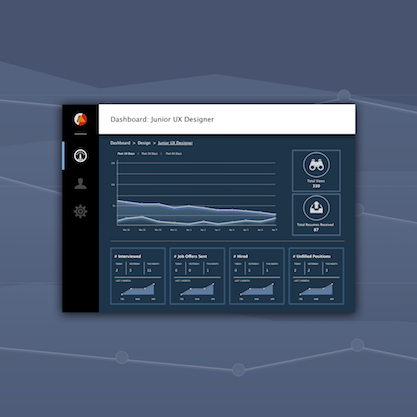

Day 40 - HR Duties
This took a good 4 hours to create haha. A lot longer than I expected.
I decided to create an All-in-One database where the hiring team will be able to track all their data, including views on the post, # of people they need to hire, etc. I realized that there's a lot more UX research I need to do in order for this to be successful. However, from what I know, these are some of the basics that the HR team would need to know in order hire someone new.
Process:
I started by creating a checklist of what I wanted on the page. Then, I started to group specific ideas together and placed them on the a simple wireframe to see where it'd look best. I wasn't too sure of what kind of data is the most important for the hiring team, so I decided to put the graph first, as it the most eye-catching. Then, after everything has been placed in an area where I was satisfied with, I started to create a colour palette. I wanted to go for a dark theme, with bright cold colours, so I went for a cold blue tone.
After choosing my colours, I started to build my wireframe into a mockup. I really wanted to create cold neon-glow feel for this website, so I added a lot of blue shadows along. Also, with the white lettering, it really adds that spark to the website.
One thing I wasn't so sure of was the profile picture. The colour didn't align with the colour scheme, but I guess that's something I can't really change because everyone can have different colours for their profile pictures.
All in all, I just can't believe I spent so long for this one, but I'm satisifed with the design - wished there was more to show. It sucks when people think simple designs like these take a fairly short amount of time, but sometimes, the simplier the design, the longer it takes.